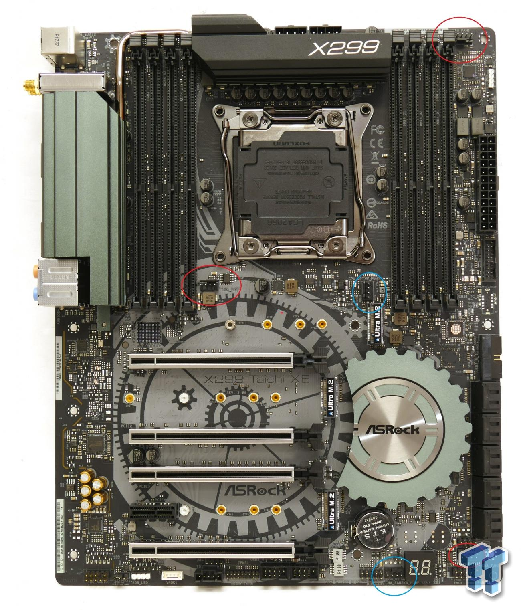

← Listeye Dön
🌐 Resmi Destek

ASRock X299 Taichi
Intel Core X serisi için güçlü VRM ve çoklu GPU desteği sunan üst seviye anakart.
Özellik
Değer
Soket
LGA2066
Chipset
Intel X299
RAM
8x DDR4 Slot
PCIe
PCIe 3.0 x16